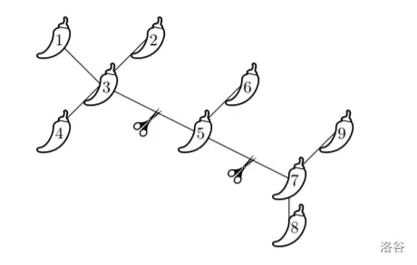

题目描述
给定一个 n 个点的树，这 n 个点编号为 1 到 n。
现在要选择断掉两条边，会形成三个连通块，假设这三个连通块内的点数分别为 a,b,c，那么您要做的就是最小化 max{a,b,c}−min{a,b,c} 的大小，求这个最小值。
输入格式
第一行一个整数 n 代表树的点数。
接下来 n−1 行每行两个整数 x,y 代表树的一条边。
输出格式
一行一个整数代表答案。
4
1 2
2 3
3 4
1
样例 1 解释
能构造的最优解三个连通块的点数都为 1,1,2，所以输出 2−1=1。
6
1 2
1 3
3 4
3 5
5 6
0
样例 2 解释
断掉点 1 到点 3 的边，点 3 到点 5 的边，形成的三个连通块点数相同。
9
1 3
2 3
3 4
3 5
5 6
5 7
7 8
7 9
2
样例 3 解释
如下图所示：

数据范围
本题采用捆绑测试。
- Subtask 1（15 pts）：3≤n≤200。
- Subtask 2（35 pts）：3≤n≤2000。
- Subtask 3（60 pts）：3≤n≤2×105。
对于 100% 的数据，1≤x,y≤n。
本题满分 110 分。